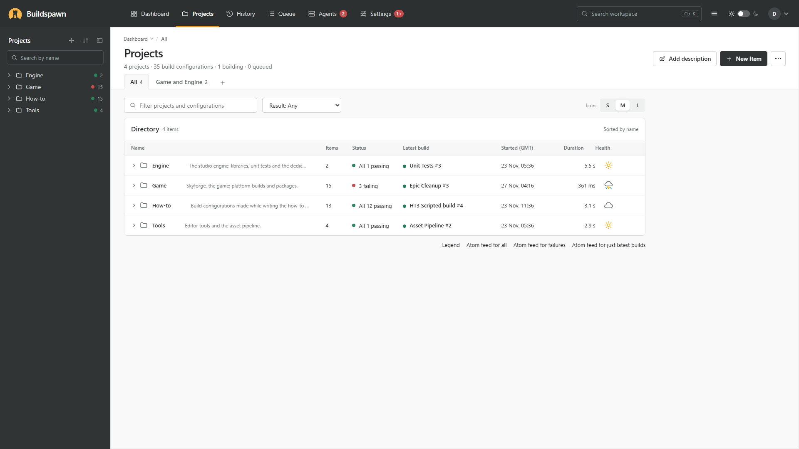

Views
A view is a tab that shows a chosen set of build configurations, so each team sees only what it cares about.
When to use it
Use views when a project or the Projects page holds more build configurations than one person needs. For example, make a tab Release for the builds that ship, a tab Nightly for the scheduled ones and a tab Failing for the ones you must look at. A view only changes what you see. It never moves, copies or changes a build configuration, and one build configuration can be in many views.
Where the tabs are
The tab bar sits under the page title, on the Projects page and on the Overview of a project. Every place that can hold views starts with one tab called All. It shows everything. It is the default view at first, and the default view cannot be deleted.

- The tabs are sorted by name, not by the order you created them.
- + at the end of the tab bar (its tooltip is New View) adds a view. It shows only if you have the View create permission.
- Rename: open the tab, click the ⋯ menu in the page header, choose Edit View and change Name.
- Delete: open the tab, click ⋯ and choose Delete View. Buildspawn asks Delete the view ‘Release’?. Deleting a view never deletes the build configurations in it. The default view cannot be deleted, and neither can the last view.
The same ⋯ menu also holds the Atom feeds of the view (All, Failures, Just latest builds).
How to set it up
- Open the Projects page, or the project that should hold the view.
- Click + in the tab bar.
- Type a Name, for example
Release. Under Type choose List View, My View or, where offered, Include a global view. Click Create. - On Edit View, fill in the fields in the tables below. The top of the page shows a Summary: how many items the view shows now, its type and the pattern if there is one.
- Click Save. The view opens.
If a view with that name already exists, Buildspawn says A view already exists with the name “Release”.
View types
| Type | What it shows |
|---|---|
| List View | Items in a simple list. You choose which build configurations show. Details below. |
| My View | Automatically all the build configurations that the current user has access to. It has no settings of its own. |
| Include a global view | Shows the content of another view that lives at the top of the server. See Include a global view. |
List View: every field
These are the sections of Edit View for a List View.
General
| Field | What it does | Default | Example |
|---|---|---|---|
| Name | The text on the tab. Change it to rename the view. If another view already has the same display name, Buildspawn warns you. | What you typed in + | Release |
| Description | Describe the purpose of the view. It shows at the top of the view. | Empty | Builds that go to players. |
Jobs
The section title is Jobs and its help line says Select the build configurations to show in this view.
| Field | What it does | Default | Example |
|---|---|---|---|
| Recurse in subfolders | Off: the list holds only the items directly in the project that owns the view. On: Buildspawn also looks inside every project below, and the tick list shows the nested items too. Names are then written with the path, such as Game/Win64. | Off | On, for a view on the Projects page that should reach into every game |
| The list of projects (tick boxes) | Tick the build configurations to show. Tick a project to show the project itself. | None ticked | Tick Win64 Build and PS5 Build |
| Use a pattern instead | A tick box. When it is on, the field Pattern shows. | Off | On |
| Pattern | A regular expression, a text pattern that is tried on the name of every item. Every item whose whole name matches is added, on top of the ticked ones. The pattern has to match the whole name, so Win64 alone matches nothing; write Win64.*. To leave something out, use a negative lookahead: (?!test.*).* shows everything not starting with test. With Recurse in subfolders on, the name includes the path. | Empty | (Win64|PS5)-.* |
Filters
This section only shows when a filter type is installed. Click Add Build Configuration Filter and choose a type. A filter works on the list that the ticks and the pattern produced. It only removes items. It never adds new ones.
| Field | What it does | Default | Example |
|---|---|---|---|
| Status Filter | A list with two choices. Enabled build configurations only hides the disabled ones. Disabled build configurations only shows only the disabled ones. | No filter | Enabled build configurations only |
Columns
Click Add column to add one, drag the handle of a column to change its order and use the delete button to remove it. The table of the view shows the columns left to right in the order of this list.
| Column | What it shows | In a new view |
|---|---|---|
| Name | The name of the build configuration, a link to it. | Yes |
| Items | For a project, how many items it holds. | Yes |
| Status | The result of the last build as a coloured icon. | Yes |
| Latest build | The number of the last build, a link to it. | Yes |
| Started | When the last build started. | Yes |
| Last Duration | How long the last build took (the column header reads Duration). | Yes |
| Weather | A health icon from the last few builds. | Yes |
| Build Button | A button that starts a build. It shows only when you may build. | Yes |
| Last Success | The last build that passed. | No |
| Last Stable | The last build that passed with no warnings. | No |
| Last Failure | The last build that failed. | No |
A new view starts with the columns marked Yes, in the order of the table. Plugins can add more columns, for example a Git branch column.
Widgets
| Field | What it does | Default |
|---|---|---|
| Filter build queue | If ticked, only build configurations in this view show in the queue. | Off |
| Filter build executors | If ticked, only the executors that could run the build configurations of this view show. | Off |
Archived build configurations and generated hidden ones never show in a view. A view that shows nothing says This view has no build configurations associated with it and links to add some existing build configurations and to create a new build configuration in this view.
When you create a build configuration from inside a List View, you can tick Add to current view so the new one is added for you. It is ticked at first when the view lists items by name, or when it uses no pattern and no filter.
Include a global view
Shows the content of a view that was made at the top of the server. Use it inside a project when you want the same list as a view on the Projects page.
| Field | What it does | Default | Example |
|---|---|---|---|
| View name | A list of the global views. Choose the one to show. Its help line says The name of a global view that will be shown. | The first one in the list | Release |
If the chosen view is later renamed or deleted, the tab shows Global view Release does not exist. Open Edit View and choose another one.
Automatic views of multibranch projects and organization folders
A multibranch project or an organization folder makes its own views. They list the branches or repositories that Buildspawn found, one view per category. A view called All comes first. In the list of view types they are named Multibranch Project All view and Organization folder All view. You cannot create them yourself, and you do not set them up: they follow what the scan finds. See Multibranch and Organization folder.
My Views
My Views holds views that only you see. Open your user page (click your name at the top right) and choose My Views. It has its own tab bar, a + to add a view and an All tab, just like the Projects page. The views you add here are private: other users do not see them.
In your own settings you can pick the tab bar for My Views and which of your views opens first (Default View). See User settings. A My View inside it lists every build configuration you may open, which makes a good personal start page.
System settings for views
Open Settings › System. See System settings for the whole page.
| Field | What it does | Default | Example |
|---|---|---|---|
| Default view | The view that opens first on the Projects page. The list holds all the top-level views. It shows only when there is more than one view. The default view cannot be deleted. | All | Release |
| Views Tab Bar | Chooses how the tabs are drawn. A plugin can offer its own tab bar. When only the built-in bar exists, which is the case in a standard Buildspawn, nothing is offered and this field is hidden. The same is true for the tab bar of My Views. | The built-in tab bar (Default Views TabBar) | Hidden |
A worked example
The studio has the projects Game and Tools. The release manager wants one tab for the builds that go to players.
- Open the Projects page and click +.
- Name:
Release. Type: List View. Click Create. - Tick Recurse in subfolders. The tick list now also shows the items inside Game and Tools.
- Tick Use a pattern instead and type
Game/(Win64|PS5)-Releasein Pattern. - Under Filters click Add Build Configuration Filter, choose Status Filter and Enabled build configurations only.
- Under Columns click Add column, choose Last Success, then drag it to sit after Latest build.
- Click Save.
What you see
A new tab Release appears next to All. Its table lists Game/Win64-Release and Game/PS5-Release with the columns you chose. Disabled ones are left out. The Summary on Edit View reads Shows 2 items. and Also includes followed by your pattern.
Problems and fixes
| Problem | What to do |
|---|---|
| The view is empty. | Tick at least one build configuration or switch on a pattern. A filter alone adds nothing. Check that the pattern matches the whole name, and add .* at the end. |
| Items inside a project are missing. | Switch on Recurse in subfolders, and write the pattern with the path. |
| There is no +. | You do not have the permission to create views. Ask an administrator. See Users, groups and permissions. |
| There is no Delete View. | You are on the default view, or the last view. Choose another Default view in System settings first. |
| A new build configuration is not in the tab. | A view of ticked names does not add new items by itself. Tick the new one, or use a pattern. |
| An error occurred when retrieving build configurations for this view | Open the Buildspawn log for details. Often a pattern is not a valid regular expression. |